卍新纂大日本續藏經 第57冊
No.972 法界安立圖 (3卷)
【明 仁潮錄】
第 3 卷
法界安立圖卷下之上
五遊諸佛剎
釋總題
遊諸佛剎者謂深心信解諸佛剎土神智徧觀也葢知有人天不知有佛者凡俗也信佛為出世大聖者道器也然信一佛其福雖勝見量猶局信多佛則其福量無邊其智量益廣。
十方佛剎圖
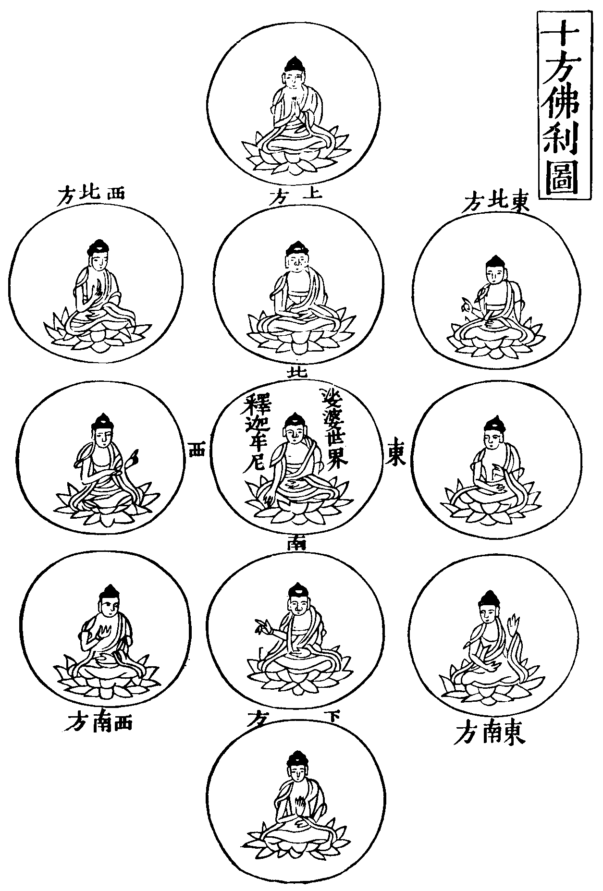
大千世界為一佛剎如是娑婆之外太虗空中復有十方大千諸佛剎土何以知然依華嚴經云此娑婆世界東次有世界名為密訓次南有世界名豐溢次西有世界名離垢次北有世界名豐樂次東北有世界名攝取次東南有世界名饒益次西南有世界名鮮少次西北有世界名歡喜次下方有世界名關[門@龠]次上方有世界名振音此十方世界如來各有百億萬名號令諸眾生各別知見乃至十方無數世界亦復如是(一四天下佛有十千名號大千有百億四天下故有百億萬名號十方大千亦如是)。
東方淨土
七佛功德經云東方去此過四兢伽河沙佛土有世界名曰無勝佛號善名稱吉祥王如來亦是寶嚴之土蓮華化生次東方過五兢伽沙佛土有世界名曰妙寶佛號寶月智嚴光音自在王如來次東方過六兢伽沙佛土有世界名曰圓滿香積佛號金色寶光妙行成就王如來次東方過七兢伽沙佛土有世界曰名無憂佛號無憂最勝吉祥王如來次東方過八兢伽沙佛土有世界名曰法幢佛號法海雷音王如來次東方過九兢伽沙佛土有世界名曰善住寶海佛號法海勝慧遊戲神通王如來東方去此過十兢伽沙佛土有世界名淨瑠璃佛號藥師瑠璃光王如來如是諸佛世界皆如西方極樂世界功德莊嚴等無差別(兢伽或恒河此河濶四十里沙細如麵一沙計一佛剎計盡一河之沙名一恒河沙佛剎)。
西方淨土圖
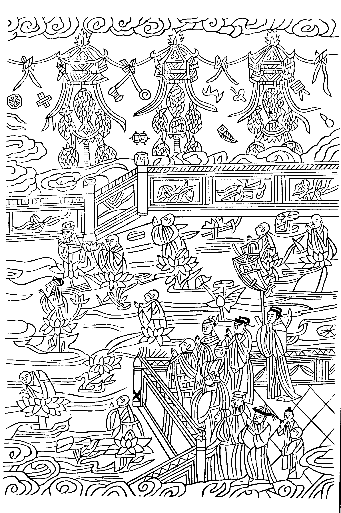
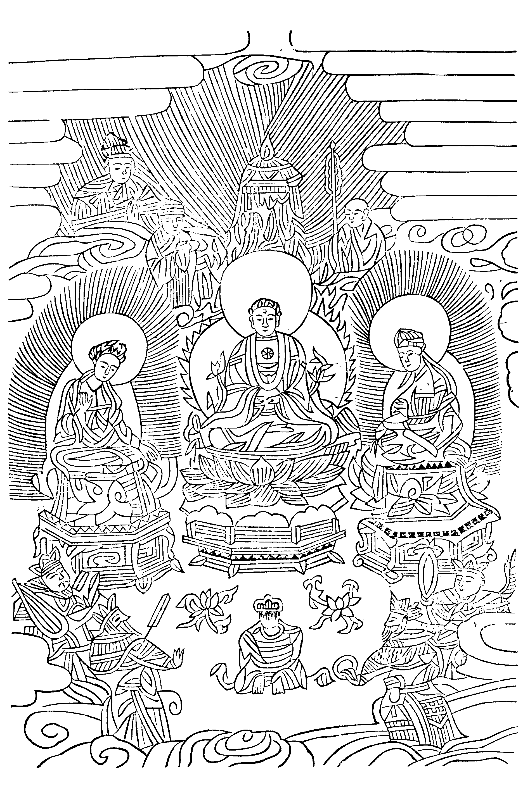
西方淨土
何名淨土世界皎潔目之為淨即淨所居名之為土攝論云所居之土無有五濁如頗梨等名清淨土對法論云無煩惱眾生住處名為淨土十方國土雖復清淨惟西方極樂世界最為殊勝故。
阿彌陀經云從是西方過十萬億佛土(大本百萬)有世界名為極樂彼土何故名為極樂其國眾生無有眾苦但受諸樂故名極樂(大本云有自然清淨之音自然快樂之事)。
七寶嚴地
大阿彌陀經云阿彌陀佛剎中皆自然七寶所謂黃金白銀水晶瑠璃珊瑚琥珀硨渠其體性溫柔以是七寶相間為地光色照曜奇妙清淨(觀經云琉璃地上金繩間錯以七寶界分齊分明放種種光其光如華或如星月)恢廓平正無須彌輪圍諸山大海及坑坎井谷亦無地獄鬼畜修羅等惟有自然流泉亦無寒暑(小本云無三惡道)。
七寶宮宇
彼佛講堂精舍七寶合成復有寶樓觀欄楯(小本七重欄楯)寶珠瓔珞之所嚴飾殊特妙好清淨光暉菩薩聲聞所居宮宇亦然諸天世人所居宮閣隨形高下大小或一寶二寶乃至多寶所成或在地下或懸空中隨福厚薄各得受用(觀經眾寶國土一一界上有五百億寶樓小本有樓閣四寶嚴飾之)。
蓮華浴池
有諸池沼或黃金為池或白銀為池或水晶瑠璃為池或珊瑚琥珀為池乃至七寶為池其底沙亦如是其寶池有方四十里者五十六十里者以至方二萬四百八十里若大海者若佛浴池其方倍此眾寶合成八功德水湛然盈滿清淨香潔味如甘露有百種異華芬芳馥郁○一一七寶池中有六十億七寶蓮華一一蓮華十二由旬一一寶華百千萬葉其華光明無量雜色青色青光白色白光玄黃朱紫之色其光亦然煒燁煥爛明輝日月流光化佛說清淨法。
行樹樂音
諸寶池岸上有無數旃檀香樹吉祥果樹花果恒芳香氣流布復有七種寶樹或一寶者二寶者以至七寶為一樹者根莖枝葉各以一寶如是諸樹行行相植莖莖相望如是行列數百千重(小本七重)周徧世界微風吹動出妙樂音皆演妙法。
寶網舒光
復有無量寶網彌覆其剎皆以金銀珍珠百千雜寶奇妙異珍莊嚴校飾周帀垂布光色晃曜和風吹網出妙法音或吹妙華徧處散布。
頂光遠照
十方世界一切眾生往生彼國者皆在寶池蓮華化生自然長大無乳養者食自然食身皆金色容貌端正非世可比但光有大小佛頂光明照千萬世界(小本光明無量照十方國)菩薩頂光照千億萬里聲聞頂光各照七丈。
化禽演法
有白鶴孔雀鸚鵡舍利迦陵頻伽共命之鳥亦演說法音皆佛神力所化(小本是諸眾鳥皆阿彌陀佛欲合法音宣流變化所作)。
壽命長遠
彼佛壽命及其人民無量無邊阿僧祗劫故名阿彌陀(阿僧祗此云無央數乃大劫之名也)華嚴經云娑婆世界一劫極樂世界為一日一夜。
往生正因
志心欲往生者有三輩上者捨家棄欲而作沙門心無貪慕持守經戒行六波羅蜜菩薩業專念彼佛修諸功德是人夢中見佛菩薩命終佛與聖眾悉來迎致即于彼寶池化生得為菩薩中者雖不能作沙門大修功德常信受佛語深發無上菩提之心專念彼佛隨力修善奉持齋戒起立塔像飯食沙門懸幡然燈散華燒香以此回向願生彼國命終化佛接引往生彼處功德次前下者不能作諸功德發大道心一向專念每日十氣念佛臨終夢佛亦得往生其德次于中者○復有三等其次齋戒清淨一心念佛十晝夜不絕者命終必得往生又縱不能十晝夜當絕慮去憂勿近女人端身正心斷除愛欲齋戒清淨憶念佛名一日夜不絕亦得往生又若男子女人發菩提心持諸禁戒所作善緣饒益眾生憶念彼佛及剎境界命終佛迎化生淨土(又云生彼佛剎必修十善小本云若一日二日至七日一心不亂即得往生)。
疑城示謫
若人修功德願生彼剎後有悔心疑惑不信彼佛剎及往生者續有念心暫信不信志意猶豫復又悔過念佛亦生彼剎在邊地七寶城中蓮花化生衣食自然受天快樂惟于城中經五百歲不見佛法及菩薩以此為苦示其小謫是故念佛之人應當諦信發願往生勿懷疑惑致斯罪責。
正報總說
蓮宗寶鑑云因修白業果感淨方化佛引上金臺賢聖迎歸樂國高超三界逈出四流業盡塵消亡情絕慮質托蓮苞之內神遊寶界之中面奉阿彌為本師得見觀音勢至為親友清淨海眾大會寶池九品勝流各說本行五香拂體三德嚴身暫扇微風聆眾音之演法繽紛花雨覩燄網之舒光縹緲雲霞近浮神足輕盈衣裓盛接妙花晨謁慈顏得法印而還國暮遊金剎聽玉偈以逍遙瑞蓮初綻為遣殘殃新學化生行成不退豈惟近忘麤苦抑亦佛果非遙戲翫瓊林灌沐德水百寶之樓臺華麗七重之行樹森嚴景序長春地平如掌衣食隨念而至天樂不鼓自鳴受用出于自然快樂實非人世諸天萬億倍不可比論諸佛恒河沙悉皆稱讚身具光明妙相足踐聖道香階壽命難量悲願無盡捨兩重生死既非果趣之身獲本際常光離去來之相緣強德勝皆由念佛心生福備壽長盡是淨因感報故知佛有攝生之願生有感佛之因如是勝緣起于信願以斯妙果成就正依或禪誦七寶池邊或經行黃金地上飽禪悅法喜珍味掛慈悲喜捨天衣功德資神增加悲智雍容辦道長養聖胎入無生門便登菩薩之位得阿跋致不退菩提之心住法王家盡授如來之記聞大椉法同稱補處之尊念念虗玄心心靜慮得三昧正定具六種神通獻供十方往來無礙分身億剎不失定心洒法水于三千出眾生于火宅自他兼利行願周圓可謂百千三昧盡唯心功德莊嚴歸自己。
今此極樂世界以娑婆觀之即西去有十萬億佛剎之遙若以世界種觀之則極樂世界尚抂第十三重內去中間娑婆不遠以娑婆西去有佛剎微塵數世界等方至十三重極西邊際此極樂是念佛人往生之處實有七寶淨土執無淨土是邪見說。
一浮幢佛剎圖
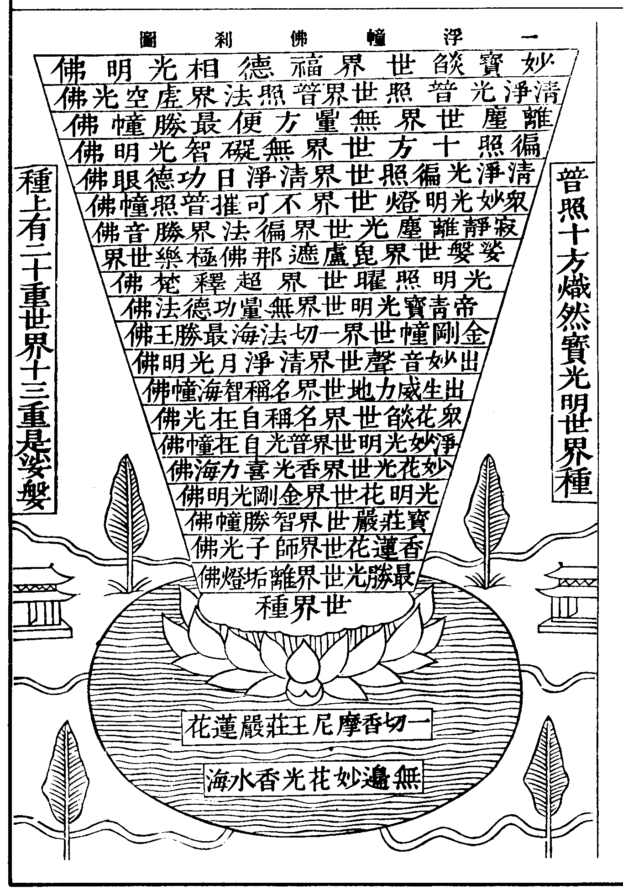
華嚴經云有十不可說佛剎微塵數香水海在華藏莊嚴世界海中如天帝網分布而住此最中香水海名無邊妙華光以現一切菩薩形摩尼王幢為底出大蓮華名一切香摩尼王莊嚴有世界種而住其上名普照十方熾然寶光明以一切莊嚴具為體有十不可說佛剎微塵數世界于中布列其最下方有世界名最勝光徧照佛號淨眼離垢燈佛剎微塵數世界周帀圍遶此上過佛剎微塵數世界有世界名種種香蓮華妙莊嚴佛號師子光勝照二佛剎微塵數世界周帀圍遶此上過佛剎微塵數世界有世界名一切寶莊嚴普照光佛號淨光智勝幢三佛剎微塵數世界周帀圍遶此上過佛剎微塵數世界有世界名種種光明華莊嚴佛號金剛光明無量精進力四佛剎微塵數世界周帀圍遶此上過佛剎微塵數世界有世界名普放妙華光佛號香光喜力海五佛剎微塵數世界周帀圍遶此上過佛剎微塵數世界有世界名淨妙光明佛號普光自抂幢六佛剎微塵數世界周帀圍遶此上過佛剎微塵數世界有世界名眾華燄莊嚴佛號歡喜海功德名稱自抂光七佛剎微塵數世界周帀圍遶此上過佛剎微塵數世界有世界名出生威力地佛號廣大名稱智海幢八佛剎微塵數世界周帀圍遶此上過佛剎微塵數世界有世界名出妙音聲佛號清淨月光明相無能摧伏九佛剎微塵數世界周帀圍遶此上過佛剎微塵數世界有世界名金剛幢佛號一切法海最勝王十佛剎微塵數世界周帀圍遶此上過佛剎微塵數世界有世界名恒出現帝青寶光明佛號無量功德法十一佛剎微塵數世界周帀圍遶此上過佛剎微塵數世界有世界名光明照曜佛號超釋梵十二佛剎微塵數世界周帀圍遶此上過佛剎微塵數世界有世界名娑婆其佛即是毗盧遮那十三佛剎微塵數世界周帀圍遶(極樂世界在此圍遶伴剎之中)此上過佛剎微塵數世界有世界名寂靜離塵光佛號徧法界勝音十四佛剎微塵數世界周帀圍遶此上過佛剎微塵數世界有世界名眾妙光明燈佛號不可摧伏力普照幢十五佛剎微塵數世界周帀圍遶此上過佛剎微塵數世界有世界名清淨光徧照佛號清淨日功德眼十六佛剎微塵數世界周帀圍繞此上過佛剎微塵數世界有世界名徧照十方佛號無礙智光明十七佛剎微塵數世界周帀圍遶此上過佛剎微塵數世界有世界名離塵佛號無量方便最勝幢十八佛剎微塵數世界周帀圍遶此上過佛剎微塵數世界有世界名清淨光普照佛號普照法界虗空光十九佛剎微塵數世界周帀圍遶此上過佛剎微塵數世界有世界名妙寶燄佛號福德相光明二十佛剎微塵數世界周帀圍遶。
此徧照十方熾然寶光明世界種有如是等不可說佛剎微塵數廣大世界各各所依住各各形狀各各體性各各方面各各趣入各各莊嚴各各分齊各各行列各各無差別各各力加持周帀莊嚴所謂十佛剎微塵數回轉形世界十佛剎微塵數江河形世界十佛剎微塵數旋流形世界十佛剎微塵數輪輞形世界十佛剎微塵數壇墠形世界十佛剎微塵數樹林形世界十佛剎微塵數樓觀形世界十佛剎微塵數尸羅幢形世界十佛剎微塵數普方形世界十佛剎微塵數胎藏形世界十佛剎微塵數蓮華形世界十佛剎微塵數佉勒迦形世界十佛剎微塵數眾生形世界十佛剎微塵數佛相形世界十佛剎微塵數圓光形世界十佛剎微塵數雲形世界十佛剎微塵數網形世界十佛剎微塵數門闥形世界如是等有不可說佛剎微塵數此一一世界各有十佛剎微塵數廣大世界周帀圍遶此諸世界一一復有如上所說微塵數世界而為眷屬如是所說一切世界皆在此無邊妙華光香水海及圍遶此海香水河中。
清涼疏云准標及結皆有不可說佛剎微塵數其別辨中但列十九佛剎微塵數為二十重其能遶剎但有二百一十剎塵數(疏明標結多別別少補註經中但以二十箇世界為主及眷屬為二十重豈中間所過之剎獨無眷屬則八方之上下重重空缺何成安立乃知不爾故文結云如是等有若干數則知八方重重布滿齊等無異其數已具且如種中第一世界有一剎塵眷屬第二世界亦應有剎塵眷屬第三第四至于二重下經過佛剎塵數主剎皆有剎塵數伴遶即有多多剎塵數次第至二十重具有無數重其世界之數比標文最多文但標十不可說剎塵數未至恒沙剎塵故最少以二重下即有佛剎微塵數箇佛剎微塵數世界故其二重上又倍之三重上又倍之)。
十浮幢佛剎圖
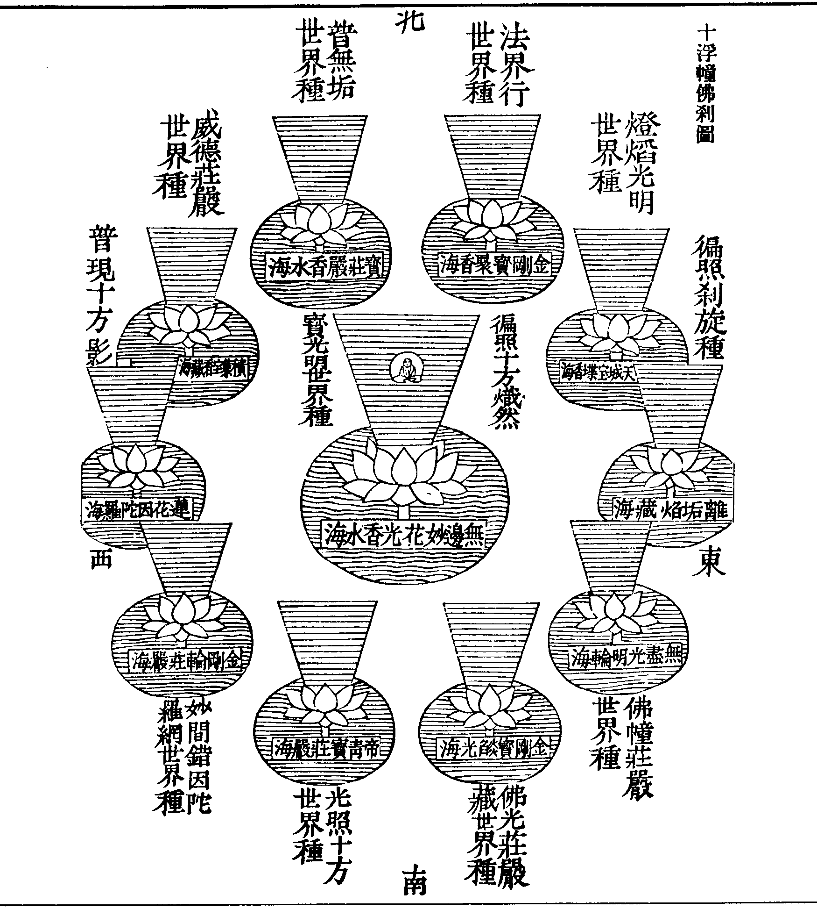
此無邊妙華光香水海東次有香水海名離垢燄藏出大蓮華名一切香摩尼王妙莊嚴世界種名徧照剎旋二十重世界于中安住此香水海南次有香水海名無盡光明輪世界種名佛幢莊嚴此海右旋次有香水海名金剛寶燄光世界種名佛光莊嚴藏此海右旋次有香水海名帝青寶莊嚴世界種名光照十方此海右旋次有香水海名金剛輪莊嚴底世界種名妙間錯因陀羅網此海右旋次有香水海名蓮華因陀羅網世界種名普現十方影此海右旋次有香水海名積集寶香藏世界種名一切威德莊嚴此海右旋次有香水海名寶莊嚴世界種名普無垢此海右旋次有香水海名金剛寶聚世界種名法界行此海右旋次有香水海名天城寶堞世界種名燈燄光明(如是十海在妙華光海外次第右旋周帀圍遶其十世界種中皆有二十重世界于中安住)此華藏莊嚴世界海有須彌山微塵數風輪所持其最上風輪名殊勝威光藏能持普光摩尼莊嚴香水海此香水海有大蓮華名種種光明蕋香幢華藏莊嚴世界海住在其中四方均平清淨堅固金剛輪山周帀圍遶地海眾樹各有區別此大輪圍山內所有大地一切皆以金剛所成堅固莊嚴不可沮壞清淨平坦無有高下此大地中有十不可說佛剎微塵數香水海一切妙寶莊嚴其底妙香摩尼莊嚴其岸毗盧遮那摩尼寶王以為其網香水澄徹具眾寶色充滿其中種種寶華旋布其上旃檀細末澄垽其下(云云)一一香水海各有四天下微塵數香水河右旋圍遶此十不可說佛剎微塵數香水海中有十不可說佛剎微塵數世界種安住其最中香水海名無邊妙華光世界種名普照十方熾然寶光明有二十重世界于中安住如前無邊妙華光香水海次東有離垢燄藏等十香水海經不可說佛剎微塵數香水海至最近輪圍山香水海名頗梨地世界種名常放光明有二十重世界于中安住(經文但列四重名號)其離垢海次南有無盡光明輪等十香海經不可說佛剎微塵數香海至近輪山香水海名妙樹華世界種名出生諸方廣大剎(亦二十重世界)此無盡輪海右旋次有金剛寶焰光等十香海經不可說佛剎微塵數香海至近輪山香水海名無邊輪莊嚴世界種名無量方差別(亦二十重世界)此金剛光海右旋次有帝青寶莊嚴等十香海經不可說佛剎微塵數香海至近輪山香水海名樹莊嚴幢世界種名安住帝網(亦二十重世界)此帝青海右旋次有金剛輪莊嚴等十香海經不可說佛剎微塵數香海至近輪山香水海名(經中闕此一海名)世界種名(經亦闕此一世界種)此金剛海右旋次有蓮花因陀羅等十香海經不可說佛剎微塵數香海至近輪山香水海名密焰雲幢世界種名一切光莊嚴(亦二十重世界)此蓮華海右旋次有積集寶香藏等十香海經不可說佛剎微塵數香海至近輪山香水海名閻浮檀寶藏輪世界種名普音幢(亦二十重世界)此積集海右旋次有寶莊嚴等十香海經不。
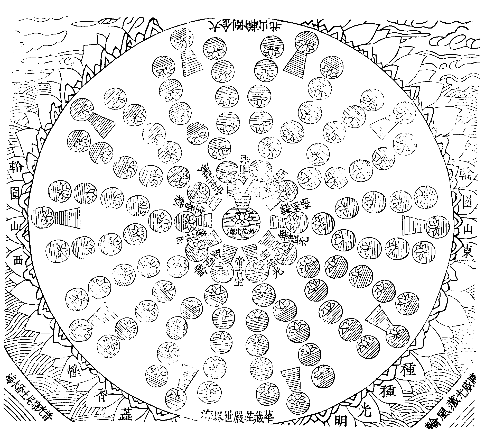
可說佛剎微塵數香海至近輪山香水海名出帝青寶世界種名周徧無差別(亦二十重世界)此寶莊嚴海右旋次有金剛寶聚等十香海經不可說佛剎微塵數香海至近輪山香水海名不可壞海世界種名妙輪間錯蓮花場(亦二十重世界)此金剛寶聚香水海右旋次有天城寶堞等十香水海經不可說佛剎微塵數香水海至最近輪圍山香水海名積集瓔珞衣世界種名化現妙衣(亦二十重世界)如是等十不可說佛剎微塵數香水海中有十不可說佛剎微塵數世界種皆依現一切菩薩形摩尼王幢莊嚴蓮華住各各莊嚴際無有間斷各各放寶色光明各各光明雲而覆其上各各莊嚴具各各劫差別各各佛出現各各演法海各各眾生徧充滿各各十方普趣入各各一切佛神力所加持此一一世界種中一切世界依種種莊嚴住遞相接連成世界網于蓮華藏莊嚴世界海種種差別周徧建立(其華藏世界海依經中具有一百一十一香水海種亦如之其諸香海名等具華藏品中)。
華藏業因
清涼疏問蓮華香海約事可爾何因剎海相狀如斯曰略舉二因一約眾生如來藏識即是香海亦法性海依無住本是謂風輪亦妄想風于此海中有因果相恒沙性德即是正因之華世出世間未來果法皆悉含攝故名為藏若以法性為海心即是華含藏亦爾然此藏識相分之中半為外器不執受故(疎相分也)半為內身執為自性生覺受故(親相分也)如來藏識何緣如此法如是故行業引故二約諸佛謂以大願風持大悲海生無邊行華合藏二利染淨果法重疊無礙故所感剎相狀如之是以出現品中多將世界以諭佛德細尋文義乃由佛德世界如之。
棗栢論云初因大願力任持一切報得風輪甚深大慈悲報得香海無邊大行報得蓮華又蓮華即無依智體大悲含育之宮殿智照觀根順悲濟物之樓閣平等自性法身淨戒之摩尼防護之業報得輪圍萬行利生開敷眾善報得眾華建行覆蔭之寶樹如如報業所因不可具悉○夫報不虗得皆有所因若不知因云何修果以斯而觀亦可云平等荷負一切無疲厭故報得寶地以大悲隨方潤物故有諸香水海隨機普利于諸世間清淨無染故諸蓮華高出水上以諸妙德發起一切諸善根故有世界種又以尸波羅蜜為之寶垣摧邪建正為之寶幢覆以寶網報細智交絡也懸以寶鐸表法音攝召也嚴之眾寶酧檀那之德也興之供雲答精進之恩也加以破闇之光明普熏之香艸三昧遊戲之園苑無著無礙之渠流及于八正階陛令眾蹈之三明臺觀令眾升之法喜禪悅令眾味之慚珍愧瓔令眾飾之七覺之叢林蓊鬱八解之花果芬芳歷重重之聖位遊處處之道場皆是因果相符事理相濟體用無礙悲智無方心境交參聖德難量神功巨議一剎如是十剎同然(上約一德一行因果相似者言之若一度具諸度一德具多德互相涉入則非言思可及)。
釋華藏名
華藏莊嚴世界海者乃毗盧遮那如來所都實報無障礙土也華者蓮華也以持世界海大寶山王形相如之即蕋香幢藏者蓮子住處曰藏謂諸世界種在諸香水海中如世蓮子為藏所含其香海所依大地類世蓮房故莊嚴者謂寶地輪山樹林渠流宮殿樓閣階陛欄楯寶幢幡葢寶垣繚繞華果園苑寶網懸空香艸布地奇珍摩尼等世界海者謂諸世界種中諸二十重世界皆高十九佛剎微塵數廣極金剛山以其深廣難測故諭之為海。
法界安立圖卷下之上
法界安立圖卷下之下
法界者心之別目葢心之體用深廣性相無礙即是以心為法以心為界安立者心之妙相分齊莊嚴各各建立不相雜亂也圭峰禪師云未明理事不說有空直指本覺靈源故曰一真法界從一真法界分出理法界(事相光虗皆同一性)事法界(萬法森然各有分限)理事無礙法界(以理融事會事歸理)事事無礙法界(塵塵無礙法法融通)法以軌則為義界以性分為義此真空軌則之法在理為理法界在事為事法界等葢理無分限事有千差古德云春色無高下花枝有短長今此集略明事法界爾亦即理之事。
十方剎海圖
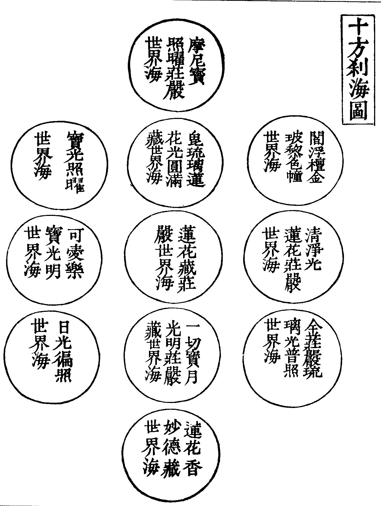
如來現相品云此華藏莊嚴世界海東方次有世界海名清淨光蓮華莊嚴彼世界種中有國土名摩尼瓔珞金剛藏佛號法水覺虗空無邊王于彼如來大會海中有菩薩名觀詧勝法蓮華幢與世界海微塵數諸菩薩俱來詣佛所(南西北方四維上下經文共有十段)。
如是十億佛剎微塵數世界海中有十億佛剎微塵數菩薩各與諸菩薩俱來詣佛所。
又入法界品云爾時東方過不可說佛剎微塵數世界海外有世界名金燈雲幢佛號毗盧遮那勝德王彼佛眾中有菩薩摩訶薩名毗盧遮那願光明與不可說佛剎微塵數諸菩薩俱來向佛所興諸供養雲(南西北方四維上下經文十段則十方共有十不可說佛剎微塵數世界海也統名十法界安立海)。
釋大數名
不可說者大數之名也此數唯佛盡知故心王菩薩請問數名之義世尊親說阿僧祇品明佛德數量世數所不及也按苑法師華嚴經註云按此方黃帝筭法總有二十三數謂一二三四五六七八九十百千萬億兆京姟秭壤溝澗正載也從萬以去有三等數法其下者十十變之中者百百變之上者倍倍變之今阿僧祇品用中上數法初數便云一百洛叉(此云萬)為一俱胝(云億)俱胝俱胝為一阿庾多(兆)阿庾多阿庾多為一那由他(京)頻婆羅(姟)矜羯羅(秭)阿伽羅(壤)最勝(溝)摩婆羅(澗)阿婆羅(正)多婆羅(載也此方數盡)多婆羅多婆羅為一界分界分界分為一普摩如是倍倍轉增至一百二十翻為一不可說數則非世間之筭數也(棗栢華嚴論阿僧祇品解與苑註大同小異大槩以數此類未必全同)。
佛剎微塵數者大千世界名一佛剎將大千界內百億須彌四洲輪圍及大地等盡皆細磨為塵名一佛剎微塵以一微塵計一世界計前所磨之塵盡名一佛剎微塵數世界經中以世界極多非世數可紀故每以佛剎微塵數計之曰一佛剎塵二佛剎塵乃至多多剎塵以剎塵之數或計世界或計浮幢或計香水海或計安立海等。
通觀剎海
十方剎海徧布虗空香海華幢德均義等經雖隱略例觀可知據現相品云此華藏莊嚴世界海東方次有世界海名清淨光蓮華莊嚴彼世界種中有國土名摩尼瓔珞金剛藏佛號法水覺虗空無邊王于彼如來大會海中有菩薩名觀詧勝法蓮華幢乃至詣佛興供等此文隱略假如東方法水覺佛說法時即云此清淨光蓮華莊嚴世界海西方次有世界海名蓮華藏莊嚴彼世界種中有國土名娑婆佛號釋迦牟尼于彼如來大會海中有菩薩名彌勒來詣佛所餘九方例此即知剎種義均是則總十方十億佛剎微塵數世界海中香海浮幢與中央世界海中安立莊嚴其相無異又入法界品云爾時東方過不可說佛剎微塵數世界海外有世界名金燈雲幢佛號毗盧遮那勝德王彼佛眾中有菩薩摩訶薩名毗盧遮那願光明來向佛所此文則又略其世界海及世界種也亦如彼佛為主乃云爾時西方過不可說佛剎微塵數世界海外有世界名娑婆佛號釋迦牟尼彼佛眾中有菩薩摩訶薩名彌勒來向佛所餘九方亦例此如是推之則知總十方十不可說佛剎微塵數世界海(據十段經文之總數)有十不可說佛剎微塵數廣大蓮華為所依持如蕋香幢等(十方諸剎海皆如中央)一一大蓮華上各有大金剛輪圍山一一輪圍山內各有十不可說佛剎微塵數香水海如無邊妙華光香水海等一一香水海中出一蓮華如一切香摩尼王莊嚴蓮華等一一蓮華上有一世界種如普照十方熾然寶光明世界種等一一世界種中皆有二十重世界于中布列如娑婆世界八方上下諸世界等其諸浮幢皆上齊諸寶雲下齊諸寶地寶地為華幢所持華幢下有大香水海(此海有二義)若此海外有輪圍山者則各各分際各各名號如普光摩尼莊嚴香水海等下有風輪如殊勝威光藏風輪等若此海外無輪圍山者則八方諸大華王同在普光香水海中如蓮池然其香水瀰漫徧周法界莫可測其涯際矣(齊此總名為一法界安立海也)。
翱翔法界
研窮法界高廣無極展演心光恢鎣覺體自內之外從近之遠廓徹洞融徧周空界初從我等現居國土曰娑婆八方有十三佛剎微塵數世界圍遶向上經七佛剎微塵數世界至浮幢之頂(以上乃太虗空)向下度十二佛剎微塵數世界至世界之種(即寶光明世界種也)如是東行度一種十種百種千種萬億兆京乃至正載數種恒沙數種一洲塵數四洲塵數須彌塵數小千塵數中千塵數以至大千世界微塵數世界種如是一佛剎塵十百千剎至正載剎塵展轉至于阿僧祇剎塵乃至不可說佛剎微塵數世界種方至極東大金剛山下如東方次南方次右旋九方亦如是周極輪圍是為華藏世界海邊疆也復從此剎海東行度一輪圍(一輪圍內有一世界海)二三輪圍十百千輪圍洛叉俱胝那由他恒沙輪圍小千中千大千塵數十佛剎塵百千剎塵阿僧祇剎塵乃至不可說佛剎微塵數金剛輪圍山又一輪圍(即極東方金燈雲幢世界)如東方南西北方及四隅亦如是共八不可說佛剎微塵數世界海皆豎高十九佛剎微塵數世界上齊寶雲下齊寶地最下極于風輪統八極為法界安立海之邊際也(安立海名詳後)研究至此至廣至大無量無邊斯似乎極然猶未也等而上之尚有上下方故若爾則彼華藏莊嚴世界海浮幢之上空曠無窮復有風輪(如平等住風輪有須彌山微塵數持上)大海(如普光海)華幢(如蕋香幢)剎海(如下華藏世界海)如是上行過一剎海復過十剎海百千萬億超諸世數乃至不可說佛剎微塵數剎海最上方至于說佛種性無有盡世界普智輪光明音佛所(上方極盡)又復彼華藏莊嚴世界海最下風輪名平等住其風輪下空曠莫測復有諸浮幢(如寶光明種上二十層等)華王(如蕋香幢)香海(如普光海)風輪(如上殊勝威光藏等須彌山微塵數)其下渡虗空至第二剎海(下方第二世界海也)又渡第三第四十百千萬乃至非世所知不可說佛剎微塵數世界海最下方至于一切如來圓滿光普照世界虗空無礙相智幢王佛所(下方至極)總法界十方而觀之則華藏周帀得八數上下得二數如豎軸水車輪狀(上下孤豎如軸八方周輳如幅)及傘葢形如是揆之亦未可為盡何也今會華藏為主而十方乃有多剎塵數之伴則上下諸佛剎海豈獨無伴乎是知經文含隱詳夫上下方之剎海一一各有眾多塵數剎海圍遶一如華藏八方之數如是則八方齊等上下相當風輪香海重重相間華王剎海行行相當譬如百千大蓮華池徧立空界嗚呼孰能縱金剛翮豁天眼光而遊觀此廣大法界者哉即使邁過斯界四顧茫茫而太虗空外復何物邪又復諦審諦觀十方剎海亦非止此而已矣是以諸佛境界廣大無邊非入大解脫得大三昧莫能見之為啟凡愚故下本經文略言毫末而已(下本文亦未全尚有十品存于天竺)中上本經當更有餘義信乎須彌量筆大海量墨莫能書也大千塵偈大地塵品未足為多原極于此則情忘智絕廓然無思矣噫回視我輩蕞爾之身心寸靈之知覺類夫醯雞處于太虗浮漚流于大海存邪亡邪恍乎惚乎如夢想焉如幻化焉罔知所以然而然者也故經云十方虗空生汝心中猶如片雲點太清裡如法界性究竟圓滿遍十方故豈欺我哉是故理極故令事廣花大故省池深。
佛光觀
華嚴論云如經中第二會普光明殿中說十信法門世尊從兩足輪中放百億光明徧照三千大千世界修行者當隨佛光作光明想徧于三千大千世界此想成已次觀光明過此大千照東方十大千南方乃至上下方亦各十大千如是一周竟次觀光明過十至百過百至千過千至萬乃至無量不可說世界光徧虗空令其自心亦徧虗空心同虗空其心自定朗然安樂方從定還起十方觀周徧推求自心內外都無所有方始了知空慧現前名憶念諸佛智慧光明普見法門在此位中定亂俱忘名初發心住以此空慧觀諸世間一切眾生及以國土皆如幻化無有體相同佛空慧解脫法門入佛知見已以此名念佛門以無念正慧相應故入十方境界念佛門空慧自性普周徧故及一切佛成正覺轉法輪三世劫在一時無時分延促之相可安立故。
法界無盡
道曠無涯法界無量眾生無數業化無窮諸佛悲智亦無有盡毗盧法身無處不徧方廣妙法在在恒宣如善知識寂靜音海主夜神云次值毗盧遮那如來于此道場成等正覺念念示現大神通力我時得見即獲此念念出生廣大喜莊嚴解脫得此解脫已能入十不可說不可說佛剎微塵數法界安立海見彼一切安立海一切佛剎所有微塵一一塵中有十不可說不可說佛剎微塵數佛國土一一佛土皆有毗盧遮那如來坐于道場于念念中成等正覺現諸神變一一皆徧一切法界海亦見自身在彼一切諸如來所又亦聞其所說妙法又亦見彼一切諸佛一一毛孔出變化海現神通力于一切法界海一切世界海一切世界種一切世界中隨眾生心轉正法輪。
七法界總論
四土圓融圖
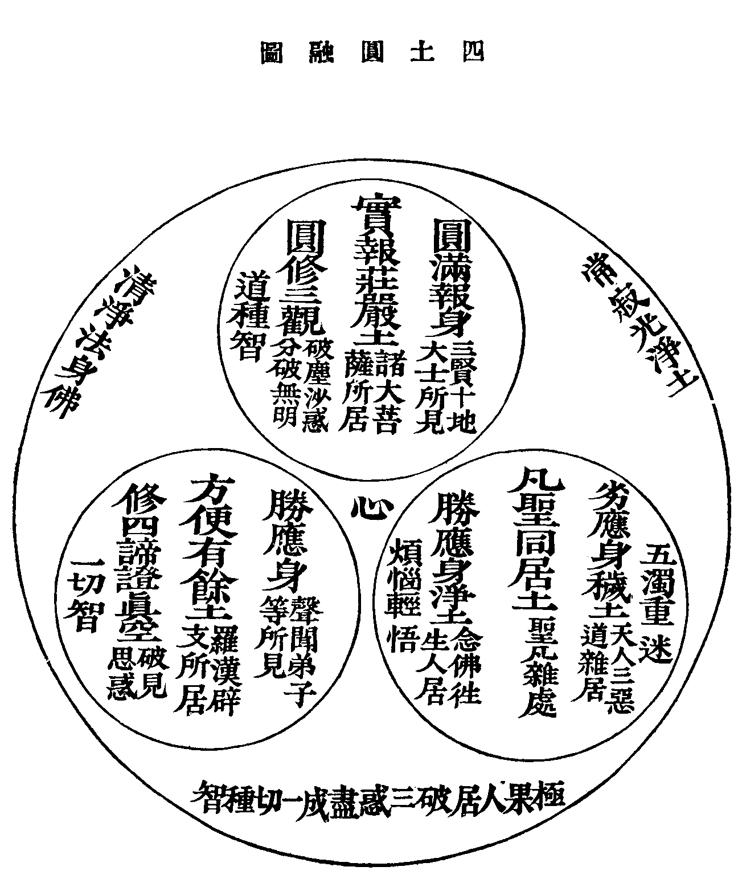
慈照宗主云寂光同居一智無殊情生彼此見有親疎覿面了色空性如如本無二路自見妙麤吾不如是一體毗盧惺惺寂寂如淨明珠照徹心體凡聖同途四土合轍三身一如頭頭淨土處處阿彌削去迷情頓明心地無量法門收歸方寸。
優曇大師偈四土非方域情生礙不通悟迷分大小淨穢隔西東萬有形雖別千機理自同春風俱一拂何處不花紅。
依正通論
十方世界無量無邊一切含靈無窮無數總而言之不過依正別則十四種謂依報國土有四種正報有情有十種十種者謂四聖六凡也言四種者曰寂光曰實報曰方便曰同居也問何等有情依何國土曰諸佛究竟極果居常寂光土法身大士居實報土三椉聖人居方便土六凡眾生居同居土曰若爾則邦域各殊凡聖亦異云何云娑訶世界為釋迦佛土清涼補陀為菩薩聖境邪曰諸佛極果理居寂光攝化有情亦居下三土然佛身有三種一法性身居于寂光土二報身居實報土三應化身居方便土及同居土釋迦乃化身佛也佛為教主故云佛之剎也菩薩以助佛轉輪故亦從之如某郡主之郡也(上言三身居四土)問若然釋迦為化身者云何經云娑媻世界其佛即是毗盧遮那曰對機說異而其體常一凡夫二椉見者名為應身(隨六道所見各各不同)諸菩薩見者名為報身有無量相好依報有無量莊嚴若得淨心所見微妙其用轉盛乃至菩薩地盡見之究竟若離業識則無見相以諸佛法身無有彼此色相迭相見故問若諸佛法身離于色相者云何能現色相曰即此法身是色體故能現于色所謂從本已來色心不二以色性即智故色體無形說名智身以智性即色故說名法身徧一切處所現之色各各差別皆無分齊而不相妨此非心識分別能知以真如自在用故。
法身如來名毗盧遮那(此云徧一切處)報身如來名盧舍那(此云淨滿)應身如來名釋迦牟尼(此云能仁寂默)此三如來一必具三三即是一不一不異非縱非橫圓覧三法假名如來隨順世間而論三身(此明三身一體)問若三身即一體者云何一體住四土邪曰雖隨機分四然非異處但同處異見耳。
四土淨穢
觀經疏云四種淨土謂凡聖同居土方便有餘土實報無障礙土常寂光土各有淨穢五濁輕重同居淨穢體析巧拙有餘淨穢次第頓入實報淨穢分證究竟寂光淨穢娑媻雜惡荊棘瓦礫不淨充滿同居穢也安養清淨池流八德樹列七珍次于泥洹皆正定聚凡聖同居上品淨也方便有餘者修方便道斷四住惑故曰方便無明未盡故曰有餘智論云出三界外有淨土聲聞辟支佛出生其中受法性身非分段生就中復有利鈍故論淨穢也實報無障礙者行真實法感得勝報色心不相妨故言無障礎純菩薩居無有二椉仁王經云三賢十聖住果報華嚴云無量香雲臺即其土淨妙五塵就中次第頓入更論淨穢也常寂光者常即法身寂即解脫光即般若是三點不縱橫竝別名祕蜜藏諸佛如來所遊居處真常究竟極為淨土分得究竟上下淨穢耳。
五土淨穢
淨土論云土有五種一純淨土唯在佛果二淨穢土謂淨多穢少即八地已上三淨穢平等土謂從初地乃至七地四穢淨土謂穢多淨少即地前性地五雜穢土謂未入性地(即凡夫所居土)第五人見後一不見前四第四人見後二不見前三第三人見後三不見前二第二人見後四不見前一第一佛上下五土悉知悉見也(注凡五上人皆下不知上上能知下也五不見四凡不知聖也四不見三小聖不知中聖也三不見二中聖不知大聖也二不見一則大聖不知至聖也第一人唯佛至聖滿覺故五土悉見聖凡悉知)。
同處異見
或問佛土生土為同在一處為各在異處曰同在一處曰既同處則劫火壞時應同散滅可得然乎曰劫火壞世佛土不壞何則眾生惡業故別業妄見故菩薩善業故佛無如是業故所以華嚴云一一剎種中劫燒不思議所現雖敗惡其處常堅固法華云眾生見劫盡大火所燒然我此土安隱天人常充滿故知不壞然滅雖不俱而起必同處雖曰同處而佛土不壞(注壞者是變化土不壞者是自他受用土以業不同故同處異見)曰土在同處我何不見曰業報不同故如人于餓鬼火處見水餓鬼于人水處見火雖曰同處而各不相見唯同業者乃能見耳亦如藥叉宮殿與人宮殿同在一處互不相見他受用土亦復如是若自受用土故是周徧不即不離若法性土起滅常如故佛土不可以存滅染淨而思矣○如維摩經螺髻梵王見釋迦佛土清淨如自在天宮舍利弗見此土坑坎穢惡乃疑念若菩薩心淨則佛土淨我世尊意豈不淨而是佛土不淨若此佛言日月明淨盲者不見非日月咎佛以足指按地即時三千大千世界若干百千珍寶嚴飾譬如寶莊嚴佛無量功德寶莊嚴土一切大眾歎未曾有佛語舍利弗我佛土常淨若此為欲度斯下劣人故示是眾惡不淨土耳譬如諸天共寶器食隨其福德飯色有異若人心淨便見此土功德莊嚴(羅什注稱適眾心故現國不同螺髻所見如自在天宮者復是見其所應見耳而未盡其淨也下言如寶莊嚴佛國始見釋迦真報應淨國淨國即在此世界如法華壽量品中云云此淨穢同處而不相雜如一器中有二種食應二種眾生又李長者云維摩經淨土是實報土未具明廣)○問如前所言則諸佛國土定是實有云何經言諸佛國土猶如虗空曰法身無相應物故形真土無方隨機而現眾生善業故諸佛本願故法如是故經偈云諸佛國土如虗空無等無生無有相為利眾生普嚴淨本願力故住其中疏云彰淨國之意使傚而行之前半智境嚴即無嚴謂自受用土周徧無等法性之土體性無生二皆無相後半悲應無嚴之嚴嚴徧法界無住之住常住剎中(□心應下後半即他受用及變化淨一偈之中四土□□如是則佛土不可以有無度之但隨悲智隱顯利物耳)。
色因識變圖
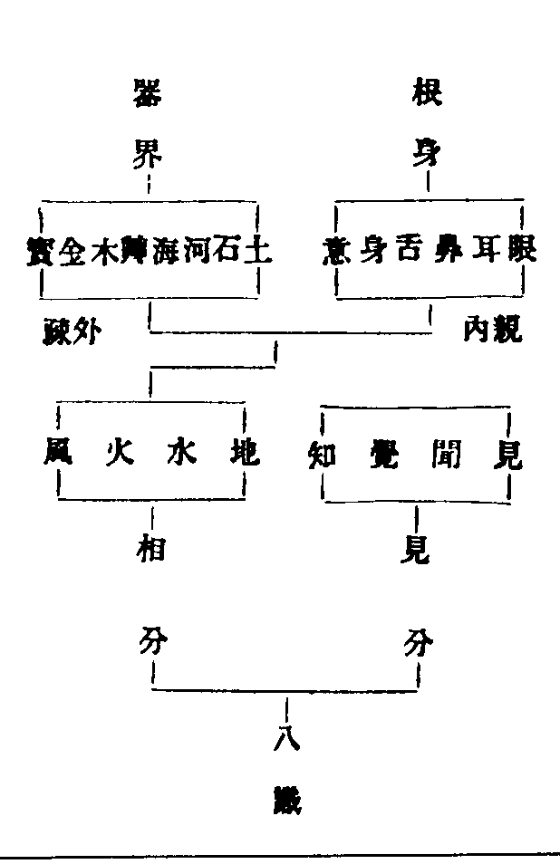
謂真妄和合非一非異名阿賴耶識即第八識此第八識分為見相二分見分變出眼等七識相分變成根身器界內六根有執受故為親相分外器界無執受故為疎相分此二種相分皆四大所成四大為能造依正為所造八識是能變之主詳具唯識論。
或問一切世界因何而有造者為誰曰因心而有唯心所造夫一切眾生自無始來迷真合妄而成阿賴耶識(此云藏識以能攝藏諸法種子)因此識故變似根身器世界等故經云無始時來界(界因也即種子識無始相續親生諸法故)一切法等依由此有諸趣(六趣生死由八識而流轉)及涅槃證得(四聖修行亦由此而得道)又云三界無別法唯是一心造一切因果(十法界諸因果)世界微塵(淨穢等諸世界)因心成體(心為能造依正為所成體)又問若識變似世界等為是各各變為是共變曰此義幽奧應四義分別。
共不共義
宗鏡錄云一共中共變由八識共相種成熟力故變似色等器世間相雖諸有情所變各別而相似處所無異如眾燈明各徧似一多人所感多人受用如無主山河眾人共業力變又共得受用重名為共非一趣用他不能用(佛言一人發真歸元十方虛空悉皆銷殞且古來發真得道者多而世界元在者豈聖言之無徵而修行者不至歟曰非也發真者界實消然所消者自變之分耳其元在者共變之境也以共義故世界猶存以不共義故說消殞也如一燈滅除燈尚明果眾皆發真則十方俱消無疑)○二共中不共若唯識理各各自變各自受用今且約自身能用他不得用名為不共如有主山河亦如自己田宅等及鬼等所見猛火等物人見為水餘趣餘人不能用故○三不共中共如自扶根塵他亦受用即內扶根塵初唯自第八變故名不共變後他人亦有受用名共如婬女等○四不共中不共如眼等根唯自識依用非他用故眼識唯依眼根發乃至身識唯依身根發等問色從識變者無色界天無有色相云何說變曰下界眾生所見是業果色無色界現境是定果色(入定時亦有寶宮殿等)俱不離心華嚴云菩薩鼻根聞無色界宮殿之香阿含云舍利弗入涅槃時色無色天宮中淚下如春雨波闍波提入涅槃時色無色天佛邊側立以此而知雖無麤色亦有細色故亦從心變是故佛言三界唯心萬法唯識。
自在不自在義
又相違識相者謂彼四類有情能變之識各相違故致令所變之境亦乃相違故天見是寶嚴地魚見是窟宅人見是清冷水鬼見是膿河猛火由四類有情先業之力共相一處各變相分不同又如人見糞穢處傍生見為淨妙飲食人見淨妙飲食諸天見為臭穢故知隨福見異垢淨唯心業自差殊食無粗細又以慳吝業故見濃滿河流溢然餓鬼等雖同趣見亦差別或有見大熱圍融煑迸灒或見屎尿橫流(若相不一)又雖同人趣薄福之人金帶見為鐵鎻或見是蛇或見金銀為水為瓦礫等又天人同器而食上福者白色薄福者見黃赤色○又色自在相者謂八地以去菩薩相及土皆得自在以上品定心有大勢力能任運變大地為黃金攪長河為酥酪此是境隨真智轉所變事皆成一切諸妙境(如華嚴會上菩薩興種種供雲寶葢樓閣珠網等)皆不離菩薩能變之心乃至異生亦能變化如變水為火(餓鬼)變晝為夜(梟等)變鐵為金(仙等)變夜為晝(鬼國)此皆是境隨事識轉所變事皆成○凡變金銀宮殿者是實定果色初地已去方能變古德云色自在心生故心能變色所以移山覆海倒地翻天變土成金攪河為酪悉無難事當知色法皆隨感現色無定體隨心所變此理元是如來藏中不思議法(十大之性一一周徧循業發現為地為水等聖人證此得自在用故轉變無礙)隨心取著成外成小(著邪見故成外道住真理故成小椉菩薩于諸法無住無礙)言心造心變咸出大宗小椉有言而無其理然諸椉中其名雖同義亦少別有共造依報各造正報有共造正報各造依報眾生迷故或謂自然(松直棘曲鶴白烏黑皆是自爾)梵天等造造已或云情與無情(皆最邪因無因如震旦云陰陽等造亦不由自然無因)造名猶通(通混內外下出正因)應云心變心變復通應云體具以無始來心體本徧故佛體徧由生性徧徧有二種一寬廣徧二即狹徧所以造通于四變義唯二即是唯圓及別後位圓人始末知理不二心外無境誰情無情故藏通造六別圓造十此十及六括大小教由觀解異故十與六各分二別藏見六實通見無生別見前後生滅圓見事理一念具足○實相法爾具足諸法諸法法爾性本無生故雖三千有而不有共而不雜離亦不分雖一一徧亦無所在若達唯心了體具者焉有異同何疑有無故知一塵一心即一切生佛心性何獨自心之有無邪以其造故以共變故同化境故同化事故世不知教之權實執小道而抗大道者其猶螳蜋乎井蛙乎應知萬法是真如由不變故真如是萬法以隨緣故。
心造法界圖
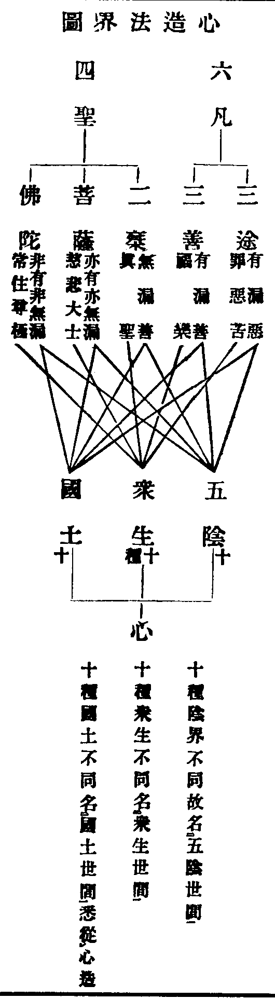
智者大師云凡界內界外一切陰入皆從心起佛告比丘一法攝一切法所謂心是論云一切世間中但有名與色若欲如實觀但當觀名色(心及相應數法皆無質但有名身形質礙曰色若開名為四受想行識即五陰)華嚴云心如工畵師造種種五陰(即十法界五陰)一切世間中莫不從心造(三種世間皆從心起)。
十法界者三義十數是能依法界是所依能所合稱故言十法界又此十法各各因各各果不相混濫故又此十法一一當體皆是法界故十法界通稱陰入界者以皆有陰入界故佛有涅槃常住陰界入大經云因滅無常色獲得常色受想行識亦復如是常樂重沓積聚義慈悲葢覆即陰義以十種陰界不同故名五陰世間攬五陰通稱眾生乃至佛攬常住陰為尊極眾生大論云眾生無上者佛是(十號中為無上士)豈與凡下同以十界眾生不同故名眾生世間十種所居通稱國土者地獄依赤鐵住畜生依地水空住修羅依海畔海底住人依地住天依宮殿住六度菩薩同人依地住通教菩薩惑未盡同人天依住斷惑盡者依方便土住(同二椉處)別圓菩薩惑未盡者同人天方便等住斷惑盡者依實報土住如來依常寂光土住仁王經云三賢十聖住果報唯佛一人居淨土土土不同故名國土世間也此三十種世間悉從心造。
無明法法性生一切法如眠法覆心則有一切夢事心與緣合則三種世間三千性相皆從心起若達無明即法性一切心一心如彼醒寤○若法性無明合有一切法陰界入等即是俗諦一切界入是一法界即是真諦非一非一切即是中道第一義諦如是徧歷一切法無非不思議三諦若一法一切法即假觀一切法一法即空觀非一非一切即中道觀若一空一切空無假中而不空總空觀也一假一切假無空中而不假總假觀也一中一切中無空假而不中總。
一念具三千圖
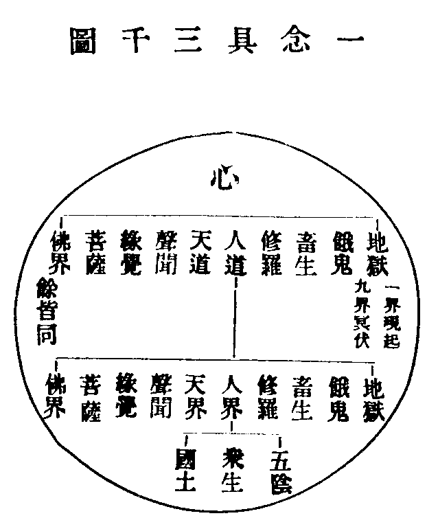
一心具十法界一法界又具十法界成百法界一法界具三十種世間百法界即具三千種世間此三千在一念心若無心則已介爾有心即具三千亦不言一心在前一切法在後亦不言一切法在前一心在後秪心是一切法一切法是心不前不後非縱非橫非一非異非識所識非言所言故稱為不可思議境此是天台圓教觀心之要 具摩訶止觀。
法界直指圖
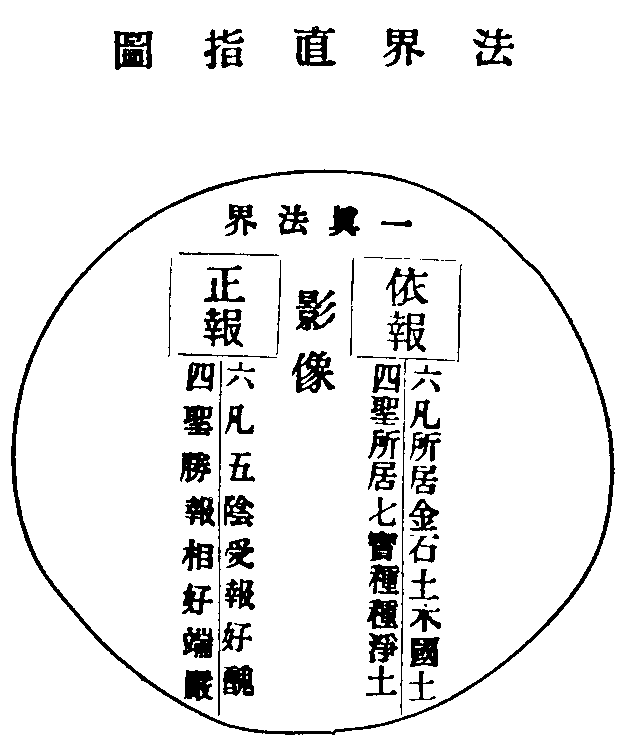
四聖六凡依報正報皆依一真法界而起業用如虗空包含萬象大海涌現千波又如明鏡現眾色像夫一真法界明鏡之體也聖凡依正鏡中之影像也雖影像似有而性常自空鏡體雖空而能現影像是以空有無礙真俗變融以體寂故名現法界以相用故名事法界以即理之事名理事無礙法界以事事即理名事事無礙法界此四法界舉一全收互攝互融凡舉一塵一毛皆具足諸法。
中觀也即不可思議一心三觀歷一切法亦如是如四大色能造大地土石艸木種種人類種種禽獸如如意珠能雨淨妙五欲七寶琳琅色法尚爾況心神靈妙寧不具一切法邪。
永明智覺禪師云夫善惡二輪苦樂二報皆三業所造四緣所生六因所成五果所攝若一念心瞋恚邪婬即地獄業慳貪不施即餓鬼業愚癡暗蔽即畜生業我慢貢高即修羅業堅持五戒即人業精修十善即天業證悟人空即聲聞業知緣性離即緣覺業六度齊修即菩薩業真慈平等即佛業若心淨即香臺寶樹淨剎化生心垢則丘陵坑坎穢土稟質皆是等倫之果能感增上之緣離自心源更無別體。
泰和曾居士曰將明法界之性先示業用之相回萬慮于體中判千途于一念故見見聞聞不可得而略也夫六合之間奇偉靈變何所不有良以斯人弱喪封錮實深心窮于耳耳奪于目亥步所經已不能曉形物之表益復昧然若不解其桎梏除其盲聾則窮心猶鄙寧承長者之家局智長驚誰破肩吾之夜今斯圖出使人知大象若斯前聞實狹然後蕩胸遣累豁視開聽即事明理達境惟心如其世智限心幽途廢照亦將謂幅圓窮于天地事業極于百齡一途既謬萬岐橫生見網綢繆長夜方永故當依聖建言編經顯義暢法界之無窮以廣其心明道妙之過量以變其志庶幾局步可展先心可革拔鍥出釘將在斯矣。
法界安立圖卷下之下(終)